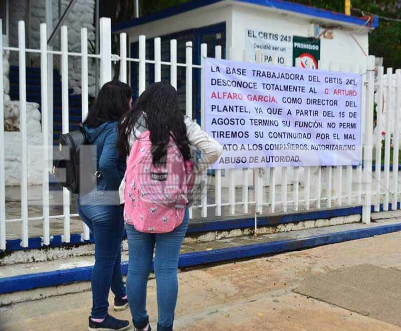

PORTAL DEL CENTRO DE BACHILLERATO TECNOLOGICO INDUSTRIAL Y DE SERVICIOS NUMERO 243.


Inicio
Areas
Proyectos
Conocenos
Becas
DIRECTORIO
Mtro. Esdras Mejia Ramirez Director de Coordinacion de Proyectos
Mtro. Jhony Jordan Roblero Galindo Presidente de ALIDET
Mtro. Maugro Joseim Gomez Roblero Evaluador 1 de Proyectos Locales
Mtra. Ingrid V. Ordaz Paxtor Evaluador 2 de Proyectos Locales
Mtro. Luis David Farrera Ruiz Coordinador de Proyectos Locales
MISION
Formar personas con conocimientos Tecnologicos en las areas industrial, comercial y de servicios, a traves de la preparacion de bachilleres y profesionales tecnicos, con el fin de contribuir al desarrollo sustentable del pais.VISION
Ser una institucion de Educacion Media superior, certificada, orientada al aprendizaje y el desarrollo de conocimientos Tecnologicos y Humanisticos.REDES SOCIALES
BLOG
Ocultar Imagen
Mostrar Imagen

Construye T
Construye T promueve el desarrollo de habilidades socioemocionales (HSE) en las y los jóvenes de educación media superior pública, a través de actividades didácticas, deportivas y culturales para mejorar su bienestar presente y futuro.
Actualmente, se han sumado cinco componentes que, de manera transversal e incorporando la perspectiva de género, aportan al desarrollo de las HSE que promueve Construye T, los cuales son: Práctica y colaboración ciudadana; Educación integral en sexualidad y género; Actividades físicas y deportivas, Arte, y Educación para la salud.
Construye T es un programa que se desarrolla en alianza entre la Secretaría de Educación Pública, a través de la Subsecretaría de Educación Media Superior (SEMS) y el Programa de las Naciones Unidas para el Desarrollo en México (PNUD).
¿Por qué es importante Construye T y las HSE?
Las habilidades socioemocionales son herramientas que permiten a las personas entender y regular sus emociones, sentir y mostrar empatía por los demás, establecer y desarrollar relaciones positivas, tomar decisiones responsables, y definir y alcanzar metas personales.
Existe evidencia de que la educación socioemocional contribuye a mejorar el desempeño académico y profesional, así como previene situaciones de riesgo en las y los jóvenes.
Calle central poniente s/n barrio san francisco c.p. 30900 (teléfono y fax: 962-64-10262)
e-mal institucional: cbtis243.dir@uemstis.sems.gob.mx
e-mal institucional: cbtis243.dir@uemstis.sems.gob.mx